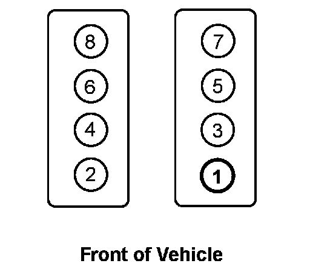

Operation CHARM
: Car repair manuals for everyone.
Home
>>
Cadillac
>>
2007
>>
Escalade ESV AWD V8-6.2L
>>
Repair and Diagnosis
>>
Powertrain Management
>>
Tune-up and Engine Performance Checks
>>
Ignition Timing
>>
Number One Cylinder
>>
Locations
Number One Cylinder: Locations

Cylinders 1, 3, 5, 7 are on the left bank.
Cylinders 2, 4, 6, 8 are on the right bank.
For ignition system firing order,
Firing Order
Service and Repair